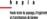

Positions
- 2015–presentAssociate Professor in landscape ecologyUniversity of Rennes · UMR CNRS 6553 ECOBIO
Landscape, community and population ecology. Director of the MSc ERPUR.
2020HDR, Habilitation to supervise researchUniversity of RennesDefended on 11 December 2020.
- 2012–2015

Research assistantHepia, Geneva, SwitzerlandInfluence of flow variability on freshwater fish populations and assemblages (Hepia/ONEMA, University of Applied Sciences Western Switzerland). Supervised by Dr. Franck Cattanéo.
- 2010–2012Post-doctoral fellowCemagref (IRSTEA), Antony
Local extinction and colonisation rates of French river fish species and their controlling factors (ANR FISHLOSS). Supervised by Pr. Bernard Hugueny (IRD) and Dr. Jérôme Belliard (Cemagref).
Education
- 2007–2010PhD in ecologyNational Museum of Natural History, Paris
Rhopalocera community functioning in urban and periurban areas. CNRS funding, Université Pierre et Marie Curie. UMR 7204 CESCO. Supervised by Pr. Michel Baguette and Dr. Romain Julliard. Read the thesis ↗
- 2007MSc, 2nd yearUniversity of Tours
Evolution and species conservation. Passed with A grade.
- 2006MSc, 1st yearUniversity of Rennes 1
Biology: relationships between organisms, populations and their ecosystems. Passed with B grade.
- 2005BSc, 3rd yearUniversity of Montpellier
Biology, with a focus on relationships between populations and organisms. Passed with B grade.
- 2003–2004BSc, 1st and 2nd yearUniversity of Nîmes
Life sciences: biochemistry, physiology, chemistry and biological sciences. Passed with B grade.
- 2002French high-school diploma (Baccalauréat)
Equivalent to A-levels in physics and chemistry.